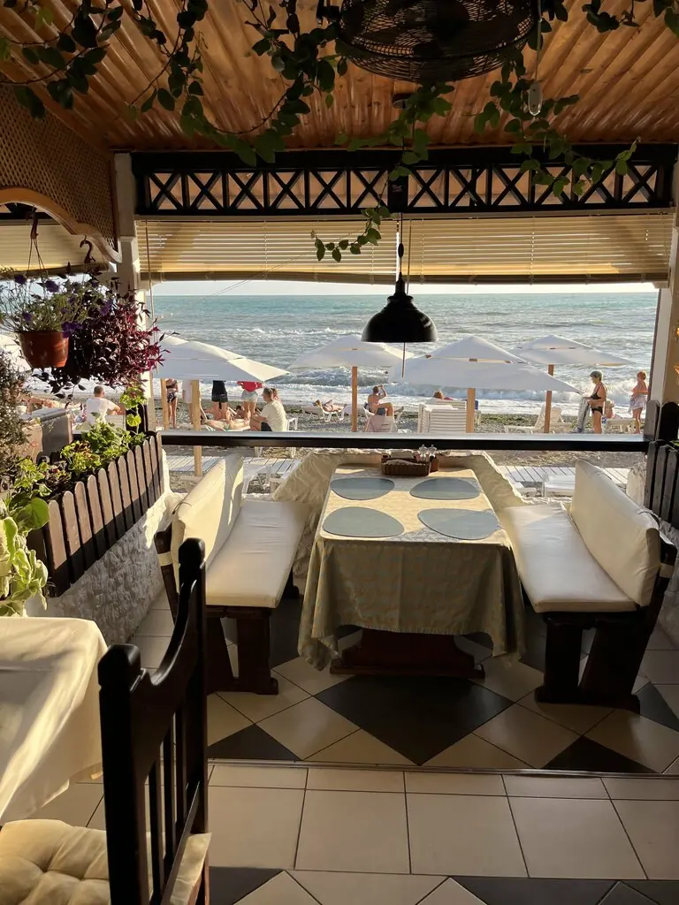
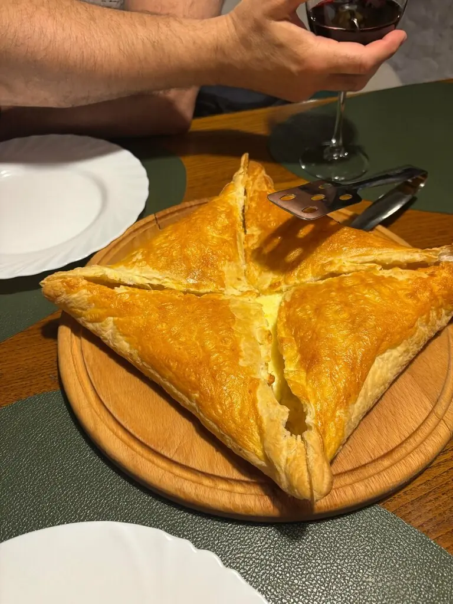
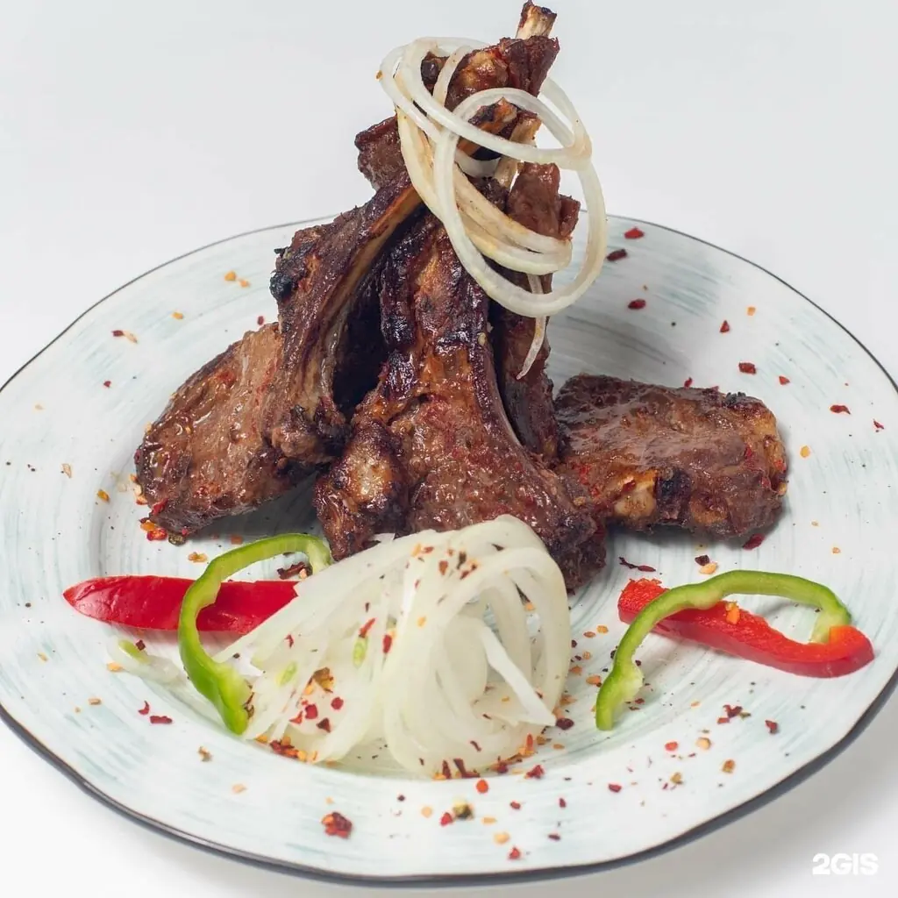
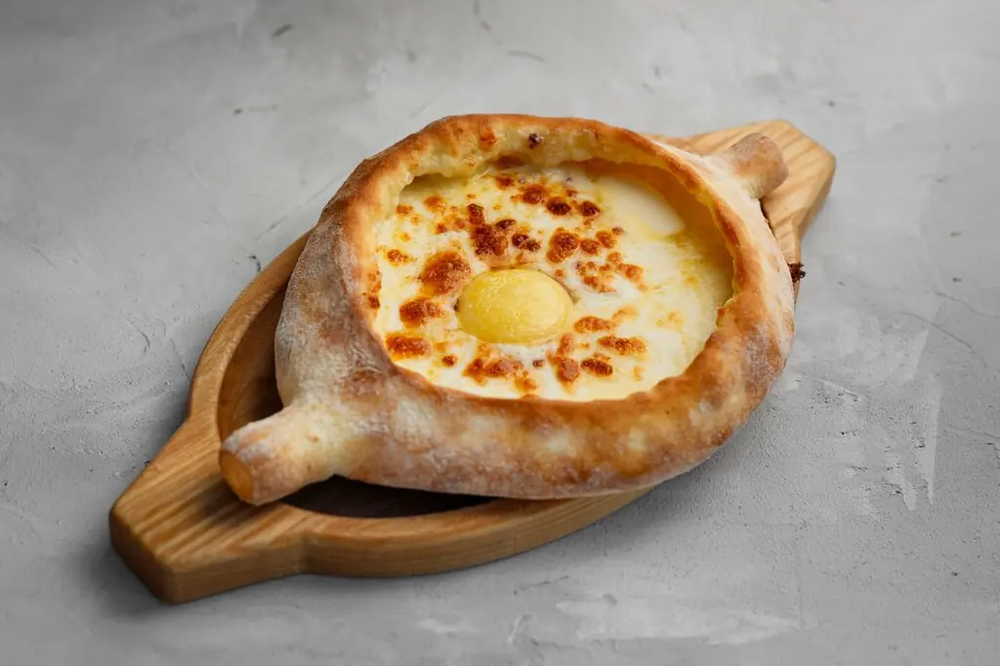
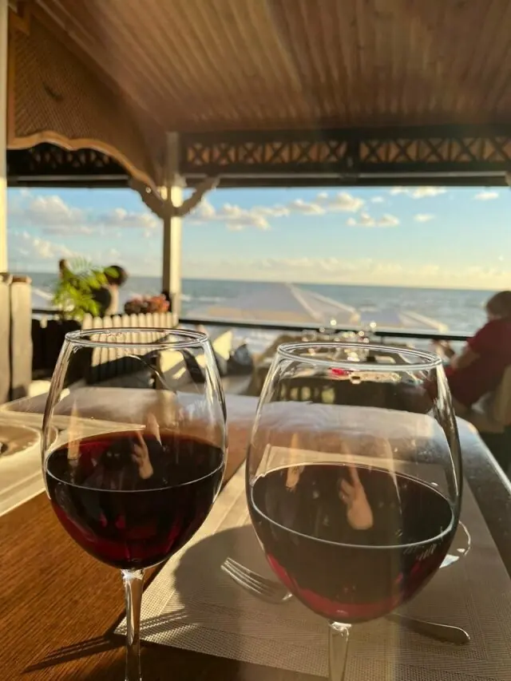
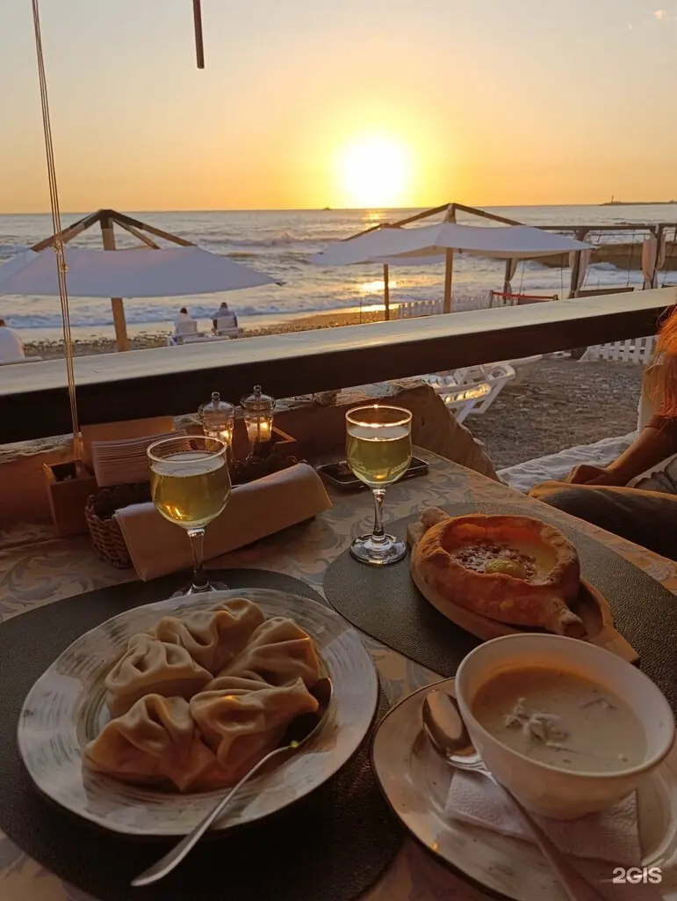
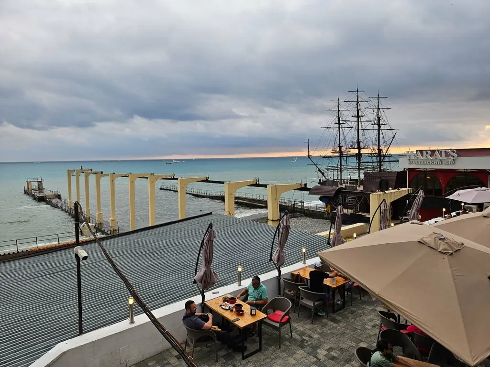

Сочи+7 862 266-84-91
Иверия
Ресторан прямо на берегу. Прокрутите вниз, и солнце начнёт садиться: лучший стол бронируют как раз к этому моменту.
4,9 · 1288 оценок

Пока светло
Хачапури, оджахури и вино на веранде с морем до горизонта.



Золотой час
Хачапури из слоёного теста850 ₽
Сёмга, томлённая в сливках1 430 ₽
Оджахури с бараниной, хинкали, салат «Тбилиси»по меню
Цены с Яндекс Карт, блюда из отзывов гостей. Полное меню добавим из вашего прайса.



Звёзды вышли
Место отличное! Прямо на берегу моря находится, просто красота невероятная, всё красиво и уютно.Катерина Царёва
Оджахури с бараниной, это гастрономическая бомба!Константин Г.
Уютная и стильная атмосфера заведения. Приятная музыка на фоне создавала расслабляющую обстановку.Сергей И